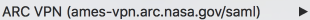
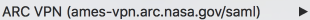

smartcard_login_button=
acceptCert_ok_button=
cp_hazard_logo=
sanityCheck_link=
vpn_url="https://ames-vpn.arc.nasa.gov/dana/home/index.cgi"
pulseAppLauncher_start_button=
pulseAppLauncher_allow_button=
restore_pages_cancel_button=Pattern().targetOffset(145,-6)
pdf_downloadedFile_icon=Pattern().similar(0.66)
Region(1,770,167,129)
Region(3,726,353,172)
Region(1159,754,281,147)
Region(805,0,635,235)
default_downloadedFile_icon=
chrome_downloadedFile_showAll_cancel_button=Pattern().targetOffset(48,2)
KatalonNetworkConnections_deny_button= pin_field=
new_pin_field=
pin_field_activID=
pin_field=
new_pin_field=
pin_field_activID= disconnect=
securePulseVPN_connected_icon=
vpn_selection=
wait(10)
#type('abc\n\n')
run('caffeinate -u -t 2&')
if exists(pin_field,20):
click(pin_field)
type('10051965\n')
exit()
disconnect=
securePulseVPN_connected_icon=
vpn_selection=
wait(10)
#type('abc\n\n')
run('caffeinate -u -t 2&')
if exists(pin_field,20):
click(pin_field)
type('10051965\n')
exit()